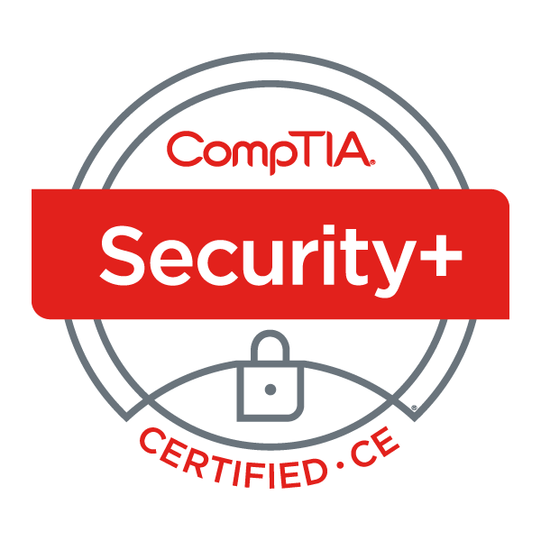

About Me
print("Hello world!)
Greetings! I'm Torin Faes, I am crazy about everything related to computers, but my true passion is cyber security! Feel free to explore my website all about me!
Work Experience
-
Student IT & Cybersecurity/oppsec assistent
UCSD HNRP
My experience at the UCSD HNRP offices consistent of a huge range of tasks ranging from simple IT & help desk services, to configuring public facing services on our on site servers, to performing penetration testing to scan fort vulenrabilities in our on site servers.
Education
-
Computer Science (BS)
UCSD
2020-June 2024
Certifications
-

The Comptia Security+ certication taught me how to maintain a secure business as an IT professional, it educated me on best practices to prevent security vulnerabilities in a environment with many users.
CompTia Security+
CompTia
2022